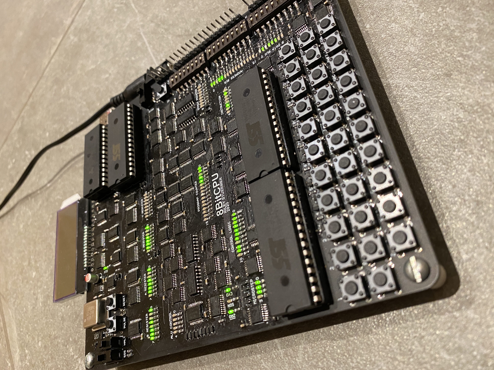
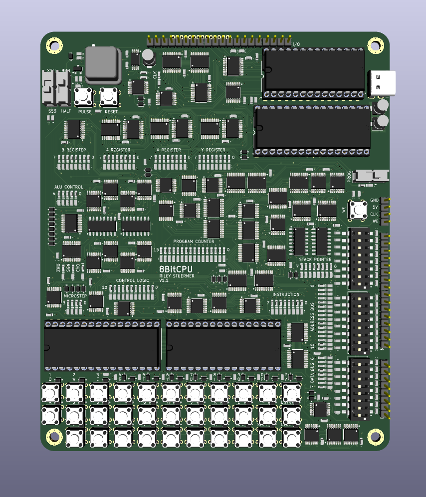
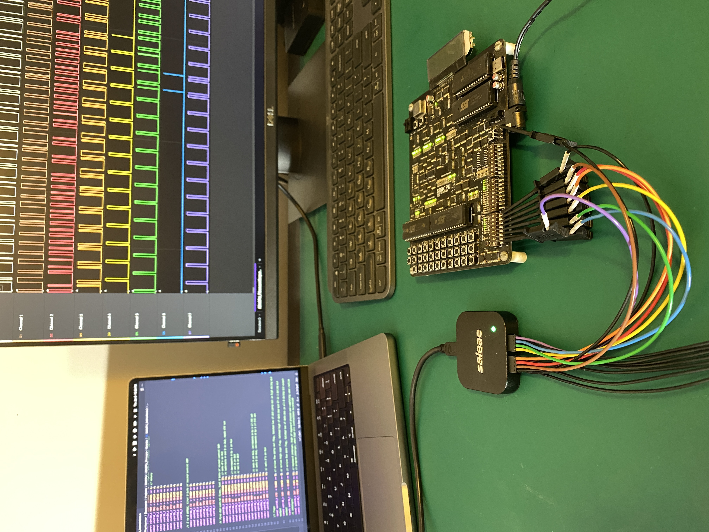

Design Overview of a Low-Level 8-Bit CPU
Design goals and requirements:
- Only use ICs with low-level functionality (logic gates, multiplexors/demultiplexors, counters, registers, buffers, and adders),
- Minimize number of unique parts to allow better price breaks,
- Execute programs at clock speeds of at least 1 MHz,
- User input and output,
- Maximum PCB board size of 150 mm by 150 mm, and
- The program ROM should be programmable independent of an external computer (but still have the option to be programmed using an external computer).
The architecture of the CPU has independent data and memory busses, which are 8-bits and 16-bits, respectively. The contents of these busses can be swapped with transfer registers. Using two busses has the benefit over a single bus in allowing simultaneous control of the data and memory. This reduces the microsteps per instruction compared to a single bus architecture, reducing the overall computation time.
The schematic of the full CPU can be downloaded as a PDF here, and is embedded below.
In addition, a PDF of the PCB is available here, and is embedded below.
With this design I was able to meet all of these requirements. The number of unique parts is 26, 11 of which are ICs of the specified variety; a program was executed using a 1 MHz clock; there is a keyboard and digital pins for input and there are LEDs, LCDs and digital pins for output; the board size is 125 mm by 150 mm; programs can be programmed into the ROM using DIP switches.
The full PCB source files can be found on my GitHub, which will later be updated to include the microcontroller code used to program both the control ROM and program ROM, as well as the definition of the instruction set and how it relates to the control ROM.
Control ROM
An instruction register takes an 8-bit instruction to a control ROM, allowing 256 unique instructions. Each instruction is divided into 16-microsteps using a 4-bit counter. The output control signals from the control ROM are fanned-out through a series of demultiplexors (DEMUXs). Doing this reduces the number of ROM chips needed in the control logic by allowing two 8-bit data ROM chips to toggle 40 control lines, as opposed to five with no fan-out. These control lines dictate when registers should latch an input or output their stored value, when counters should increment, and what operations are performed by the arithmetic logic unit (ALU). The downside of fanning out the control logic is that certain control lines can never simultaneously be enabled. This can be remedied by splitting the control lines into three sets using two 4-to-16 DEMUXs and one 3-to-8 DEMUX. The 4-to-16 DEMUXs was actually made from two 3-to-8 DEMUXs. Compared to a single 6-to-64 DEMUX (where no useful combination of control signals could be achieved), the three sets allow any one control signal from each set to be active simultaneously. To maximize the types of instructions that can be realized, the control lines were generally split into categories as output to databus, input from databus, and output to the memory bus. Miscellaneous control lines were fit into the sets where most practical from a programming perspective. An additional benefit of using control line sets is the safety from intrinsically preventing shorts on the busses by guaranteeing only one chip can output at a time.
Arithmetic Logic Unit
To perform various logic operations, the ALU takes inputs from an A and B register. The operation performed between the n-th bit of A and B are determined using a 4-to-1 MUX. One MUX is used for each bit pair. The MUX selector is the n-th bit of B and A, where B is the most significant selector. These selector bits choose which single bit to output from the MUX when presented with four control bits from the control ROM. For example, if the four ALU control bits are 1000, then only when the selector bits select the most significant input bit is the output 1, otherwise the output is 0. Hence, BAn = 11 will make the output of the n-th bit 1, while any other combination of BAn will make the output 0. This is a bitwise AND operation, making 1000 the logical AND ALU control bit signal. This 8-bit MUX output can be termed the "logic ALU MUX output". An additional eight 4-to-1 MUXs are hardwired to output A based on the value of a fifth ALU control bit. This can be termed the "A ALU MUX output". These two sets of 8-bit MUX outputs are fed to an adder. When the A ALU MUX output is disabled (to output logic 0), no addition occurs, and the result of the logic ALU MUX output is sent to the databus. In comparison, if the logic ALU MUX output is set to B and the A ALU MUX output is enabled, A and B will be added with the result outputted to the databus. This ALU architecture allows virtually every logic operation to be performed on A and B with much fewer ICs then if the physical gates (i.e. A XNOR B, NOT A, etc.) were used. The ALU design is based on the ALU in the open source Gigatron TTL computer, but I chose to implement a much larger number of logic operations into my instruction set. Based on the value of the final ALU output bits, a zero, sign, and carry flag can be saved to a flag register.
Other Components
Two other registers, an X and Y register, are also available for general use. A stack pointer was included which accesses 256 bytes of RAM, which greatly increase program complexity by allowing subroutines. A keyboard is also included which triggers an interrupt service routine shortly after any key is pressed. The interrupt service routine starts after any in-progress instruction is finished, and saves the keyboard contents as 4 bytes in RAM, with the memory location dictated by a "keyboard head pointer". A "keyboard tail pointer" can then be used to retrieve any recent keyboard presses at a time dictated by the program. An extra interrupt is included which immediately prepares the CPU in a state for the program ROM to be programmed.
Assembly and Instruction Set
The entire instruction set was roughly based on that of the 8080 microprocessor, but each microstep of the instruction set was designed from scratch to work most efficiently with the CPU's hardware. One simple program I wrote using the instructions is the Fibonacci sequence:
The assembly code used to run the above program was LD_A_byte,
0x01, LD_B_byte, 0x00, LD_X_byte, 0x01, LD_Y_byte, 0x00, PUSH_A, PUSH_B,
LW, MOV_B_A, INC_AB, JNC_dble, 0x00, 0x0C, POP_B, POP_A, ADD_B, MOV_B_X,
MOV_X_A, JNC_dble, 0x00, 0x08, JMP_dble, 0x00, 0x18. The program
runs at 1 MHz but pauses after outputting each step of the sequence so
that the output is at low enough frequencies to be visible. The output
is seen on the X register (section of LEDs third from the left, in the
upper half of the board). Monitoring the output to this register shows
the LEDs count 00000001, 00000001, 00000010, 00000011, 00000101,
...
which is binary for 1, 1, 2, 3, 5, ... , i.e. the
Fibonacci sequence.
Physical Design
This project was initially prototyped on breadboards, which required well over 50 m of wire. Although each individual module worked when tested, there were problems when connecting all modules to form the complete processor. The connections tended to become loose within the breadboard inserts. For this reason, a PCB design was necessary for further validation of the design. The small TSSOP packages used for the PCB allowed for a 125 mm by 150 mm four layer board. A dedicated ground layer and 5 V power layer were used, but some traces needed to be routed through the power layer.

I completed the first iteration of the PCB design in Altium; however I have since transitioned to KiCad due to it being open-source and cross-platform, which has produced nice results:
Test Process
While designing this project there was many opportunities for error due to the total component count exceeding 500, and 142 instructions made up of up to 16 different microsteps each. Troubleshooting with an oscilloscope was a good first step and allowed to check the voltage levels of various signals, but more often issues were not related to the analog setup of the signal. Instead, simply monitoring if the signal is high or low at the correct times can be sufficient. For this reason, being able to monitor many signals simultaneously would be beneficial, and is something an oscilloscope can fall short at.
A digital logic analyzer makes a good alternative. In my case, I used the Saleae Logic 8, which has eight channels. Using this I was able to debug both my physical layout and my instruction set by monitoring different busses while running a program. An example of the debugging process is shown below, where a section of the Fibonacci sequence program was captured.

One of my favorite things about the Saleae logic analyzer is its ease of use. It can be plugged into any computer (okay, maybe not an 8-bit CPU!) since the provided software is cross-platform. It's small form factor and convenient leads make it quick and easy to switch debugging from project to project. When considering the analog capabilities and the student discount, I would recommend this piece of test equipment to other students.
Next Steps
I am currently working on interfacing with the keyboard and the display to print characters. This will set the stage for the creation of a simple game such as snake. I have programmed such a game in C++ using code that could be most easily represented by the instruction set of the 8-Bit CPU.